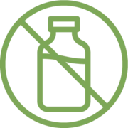
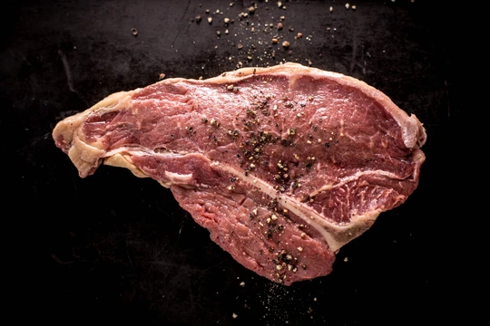

OUR MISSION
Healthy animals raised outdoors with sunlight, fresh air, and clean grass. No hormones, antibiotics, or GMOs needed.
NO GMO
NO HORMONES

NO ANTIBIOTICS
NO PESTICIDES
PASTURE RAISED

GRASS-FED, GRASS-FINISHED BEEF
Our steers are raised on pasture in fresh air and sunshine. They are 100% grass-fed and finished and graze on GMO- free, no-spray fields.